Real-world cloud solutions I've designed and delivered
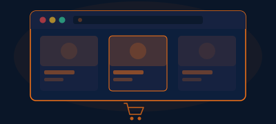
A complete end-to-end DevOps project covering 14 phases from foundation to platform engineering, building an e-commerce microservices platform with production-grade infrastructure.
Role: DevOps Engineer & Platform Architect
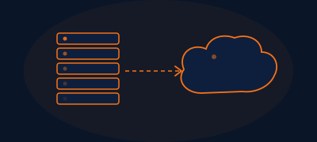
Led the migration of a client's legacy on-premises infrastructure to AWS. Re-architected monolithic applications into microservices using ECS Fargate and RDS Aurora.
Role: Lead Solutions Architect
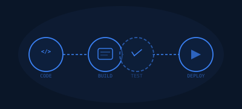
Built a fully automated CI/CD platform using GitHub Actions and ArgoCD, deploying containerized workloads to Amazon EKS with GitOps practices.
Role: DevOps Architect
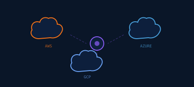
Designed a hybrid multi-cloud architecture spanning AWS and Azure for a financial services client, with secure connectivity via VPN and ExpressRoute.
Role: Solutions Architect
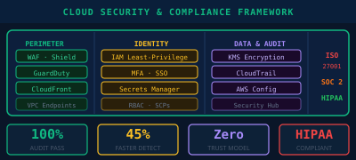
Implemented a comprehensive cloud security framework including IAM least-privilege policies, encryption strategies, and automated compliance scanning for a healthcare client.
Role: Security Architect
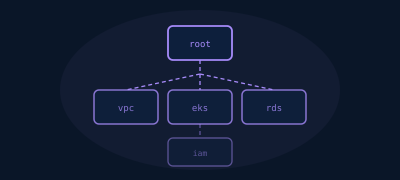
Developed a library of production-grade Terraform modules for VPC, EKS, RDS, and IAM, used across 10+ client engagements for consistent, repeatable deployments.
Role: Platform Engineer
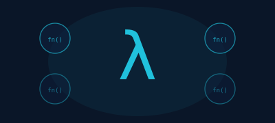
Architected a serverless event-driven pipeline using Lambda, SQS, and DynamoDB that processes 1M+ events/day for a SaaS client's analytics platform.
Role: Solutions Architect
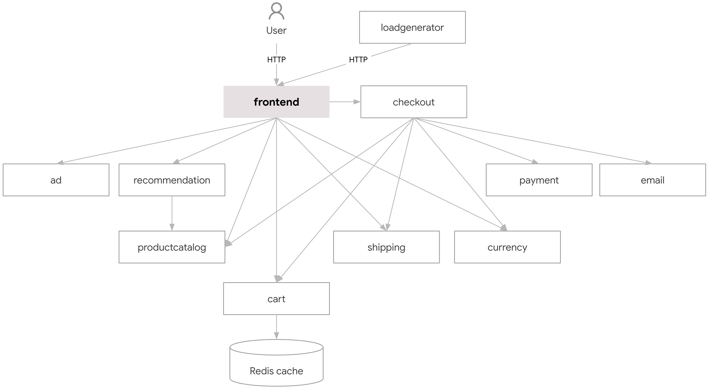
Built a comprehensive observability platform with SLO/SLI dashboards, automated alerting, and error budget tracking for a SaaS company's production services spanning 50+ microservices.
Role: Site Reliability Engineer
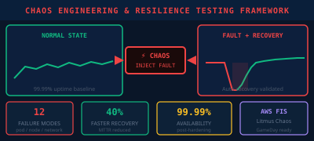
Designed and implemented a chaos engineering program using AWS Fault Injection Simulator and Litmus Chaos to proactively identify failure modes and validate auto-recovery mechanisms across production infrastructure.
Role: SRE / Reliability Engineer
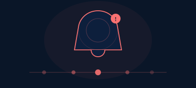
Built an automated incident response system integrating PagerDuty, Slack, and Jira with auto-remediation runbooks. Established blameless postmortem culture reducing repeat incidents by 70%.
Role: SRE Lead
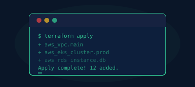
Built a comprehensive portfolio featuring 18 production-grade infrastructure labs, an 18-lab Kubernetes Mastery Guide (beginner to expert), and a 40-module multi-cloud Terraform library spanning AWS, Azure, and GCP.
Role: Cloud & DevOps Engineer